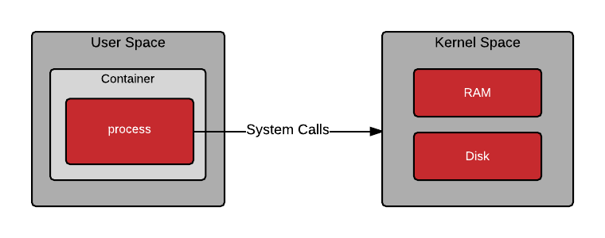

docker.io
Introduction à Docker
Par Karel Faille / @shaffe
About me
- Lead développeur chez Septime Création
- Développeur frontend & backend PHP/JavaScript
- Toujours à la recherche de l'environnement parfait !
Sommaire
- Historique
- Conteneurisation
- L'isolation dans le noyau Linux
- L'architecture Docker
- Premiers pas
- Conclusion
Historique de Docker


- Créé par la société dotCloud en tant que projet interne
- Mars 2013 : sortie de la première version open source
- Octobre 2013 : Dotcloud devient Docker Inc.
- Mai 2016 : contributions par Cisco, Google, IBM, Microsoft, Huawei, Red Hat...
Conteunerisation
“Docker est un logiciel libre qui automatise le déploiement d'applications dans des conteneurs logiciels.”Wikipedia
Dans un OS, la mémoire est séparée en deux espaces :
- le kernel space
- le user space
 Image redhat.com
Image redhat.com
Conteneurisation : multiplication de user spaces.
 Image redhat.comLe noyau Linux permet également d'isoler certaines ressources du kernel space pour le conteneur.
Image redhat.comConteneur vs machine virtuelle
 Image redhat.com
Image redhat.com
Fonctionnalités d'isolation du noyaux Linux
- Control groups
- Namespaces
- Système de fichiers union-mount
- Format conteneur
Control groups (cgroups)
Gestion de la consommation des ressources physiques des conteneurs : RAM, CPU, I/O disque...
Namespaces
- pid (Process ID) : isolation des processus
- net (Networking) : gestion des interfaces réseaux
- ipc (InterProcess Communication) : gestion de l'accès aux ressources des autres processus
- mnt (Mount) : gestion des points de montages
- uts (Unix Timesharing System) : isolation du nom d'hôte et du nom de domaine
- uid (User ID) : isolation des utilisateurs et privilèges
- cgroups (Control groups) : isole le control group d'un processus
Système de fichier union-mount (UnionFS)
Fusion de plusieurs systèmes de fichiers (couches, branches) en un seul point de montage.
Conteneur format
- Manipule les namespaces, cgroups et UnionFS.
-
Le docker engine supporte plusieurs formats :
- libcontainer
- LXC (Linux Containers)
- libvirt...
L'architecture docker
Image docker.comLes images
- Empilement de couches en lecture seule dans un système de fichier UnionFS
- Chaque couche hérite de la précédente et apporte ses modifications
- Créée à partir d'un Dockerfile où chaque instruction est une couche
- Une image est non modifiable
- Utilisée pour lancer un conteneur
- Versionnée avec un système similaire à git.
Les conteneurs
- Empilement d'une image et d'une couche modifiable
- La couche modifiable contient les modifications liées à l'application et à l'utilisateur
- Les modifications ne sont pas persistentes
Le Docker engine

Image docs.docker.com
Docker daemon
- Builde des images
- Lance et gère les container
- Manipulable avec l'API REST
Quelques commandes Docker CLI
$ docker pull # Récupère une image distante
$ docker build # Créer une image à partir d'un Dockerfile
$ docker images # Listes les images de l'hôte
$ docker run # Lance une image
$ docker ps # Liste les containers (lancés et éteints)
$ docker stop # Arrête un container
$ docker start # Relance un container
$ docker rm # Supprime un container
$ docker rmi # Supprime une image
Docker Hub
- Dépot en ligne d'images
- Facilite le travail collaboratif
- Intégration continue (CI) : build automatique, webhooks..
- Intégration avec GitHub / bitbucket
Premiers pas...
Premier conteneur
$ docker pull ubuntu:latest
$ docker images
REPOSITORY TAG IMAGE ID CREATED SIZE
ubuntu latest 7b9b13f7b9c0 11 days ago 118.3 MB
# Crée un conteneur à partir de ubuntu:latest,
# y lance le programme bash et
# y attache votre shell grâce aux options -it
$ docker run -it ubuntu bash
root@d882ad3827c4:/#
root@d882ad3827c4:/# exit # ou Ctrl+d
$ docker ps -a
CONTAINER ID IMAGE COMMAND CREATED STATUS PORTS NAMES
d882ad3827c4 ubuntu "bash" 2 minutes ago Exited (0) 1 seconds ago elegant_pike
Première application node
1. Récupérer l'image de base (optionnel)
$ docker pull node:latest2. Créer un fichier server.js
$ echo """
const http = require('http')
const server = http.createServer(function(req, res) {
res.end('Hello from the other side!')
});
server.listen(3000)
""" > server.js
3. Lancer l'image
$ docker run -d --name hello-node -p 8080:3000 -v $(pwd):/app node:latest node /app/server.jsDockerFile
Les fichiers Dockerfiles permettent de construire une image, étape par étape, calque par calque.
Conteneuriser hello-node
1. Créer un fichier Dockerfile avec le contenu suivant :
FROM node:latest
# Create app directory
RUN mkdir -p /usr/src/app
WORKDIR /usr/src/app
# Install dependencies
ADD package.json /usr/src/app/
RUN npm install
# Copy project files
ADD . /usr/src/app
# Build the app
RUN npm build
# Expose the app port and the volume to share
EXPOSE 3000
VOLUME /usr/src/app/log
# Start the app
CMD node server.js
2. Créer un fichier .dockerignore pour indiquer les fichiers à ne pas inclure dans l'image (node_modules, .git...)
$ echo -e "node_modules\nnpm-debug.log" > .dockerignore3. Créer un fichier package.json
$ echo '{ "name": "hello-node", "version": "1.0.0" }' > package.json4. Builder l'image
$ docker build . -t hello-node5. Lancer le conteneur hello-node
$ docker run -d --name hello-node -p 8080:3000 hello-nodeDocker compose
Les fichiers docker-compose.yml permettent de définir et lancer des applications utilisant plusieurs containers.
On lance les conteneurs avec la commande
docker-compose up -d.
version: '1'
services:
mysql:
image: mysql
volumes:
- /var/lib/mysql
environment:
- MYSQL_ROOT_PASSWORD=notsecret
php:
image: php:7.0-fpm
volumes:
- "~/www:/var/www/html"
links:
- mysql:db
nginx:
image: nginx
ports:
- 80:80
volumes:
- "~/docker/nginx:/etc/nginx/conf.d"
- "~/www:/var/www/html"
links:
- php:php
docker-compose.yml pour une architecture web
Architecture pour une application web
Conclusion
Pros
- Léger en poids
- Performant
- Démarre vite
- Multi-plateforme
- Versionné
Cons
- Mises à jour de sécurité
- Sauvegarde
- Moins hermétique que des VMs
Pour aller plus loin
http://rhelblog.redhat.com/2015/07/29/architecting-containers-part-1-user-space-vs-kernel-space/
https://blog.yadutaf.fr/2013/12/22/introduction-to-linux-namespaces-part-1-uts/
https://www.geeek.org/check-list-projet-docker-153.html
Wikipedia <3